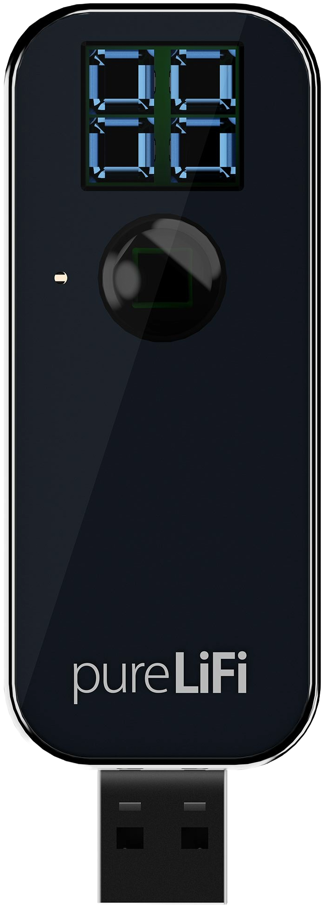

pureLiFi - LiFi XC
Viteză cum nu ai mai văzut vreodată.

MODUL (RECEPTOR) LI-FI XCstick USB-A; sistem compatibil cu Windows, macOS și Linux |
|
Li-Fi este o tehnologie nouă care transmite internetul prin lumina emisă de becuri LED.
Principiul care stă la bază este unul relativ simplu, și anume, prezența luminii înseamnă 1, iar absența ei, 0. |